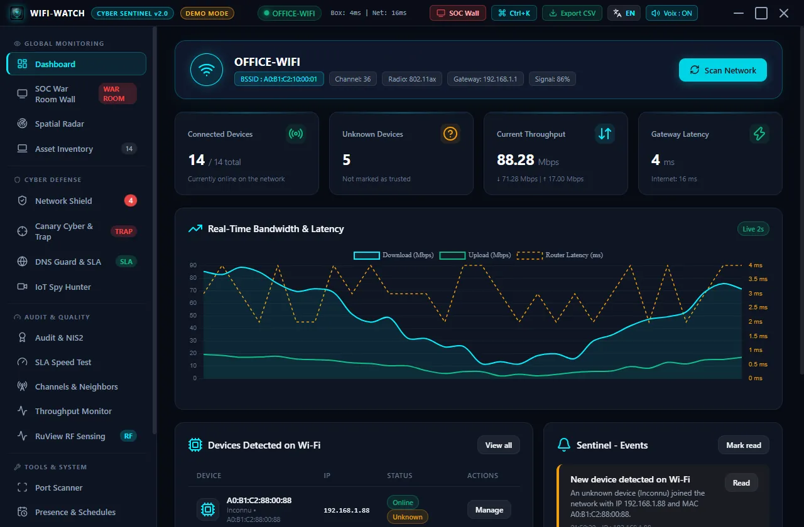

Dependency updates and a demo mode that fills the app with a fictional network.
Device inventory and radar
Every device on the network with its vendor, trust status and an owner you assign. Unknown devices stand out right away.
Free and open source for Windows 10 and 11
Wifi-Watch lists every device on your network and warns you about fake access points, rogue DHCP servers, ARP spoofing and hidden cameras. No driver, no account, nothing sent to the cloud.

Screenshots come from the built-in demo mode: a fictional network, no real data.
One portable app. Open it, scan, and read the result.
Every device on the network with its vendor, trust status and an owner you assign. Unknown devices stand out right away.
Spots a fake access point that copies the name of your Wi-Fi, and shows its channel and signal.
Warns when a second DHCP server answers or when your router's MAC address suddenly changes.
A decoy port that nobody should touch. If something probes it, you get a critical alert.
Finds IP cameras and open video streams (RTSP) on your network, and flags the ones with no authentication.
A security score, a compliance table and an HTML report you can hand to a manager or an auditor.
A wallboard for a meeting-room screen: radar, alerts and network health at a glance.
See which Wi-Fi channel is crowded, get a recommendation, and measure latency, jitter and throughput.
Block a suspicious device with a Windows Firewall rule on this PC. Easy to undo, and no router access needed.
Wifi-Watch does its work on your PC and keeps what it finds there.
No suspicious network at hand? Demo mode loads a fictional office with 14 devices, a rogue access point and live alerts.
Wifi-Watch-Portable.exe --demo
You can also start it from Settings. Nothing is scanned, no firewall rule is created, and your real data is never touched.
A free tool should say what it cannot do.
Dependency updates and a demo mode that fills the app with a fictional network.
Built-in update check: the app tells you when a new version is out. It never installs anything by itself.
Cleaner interface, nicer empty states, and a clearer README with a privacy table.
Security hardening, French and English interface, tests and continuous integration.
Yes. It is open source under the MIT license: free to use, read, modify and share, with no account and no paid tier.
Not yet. Wifi-Watch is built for Windows 10 and 11. Cross-platform support is on the roadmap.
No. A PC on Wi-Fi only sees its own traffic, and most traffic is encrypted. For per-device usage you need a router or firewall that reports it.
No telemetry, no account and no cloud. Your data stays on your PC. A few optional lookups send only the IP or MAC address you are checking, and the privacy page lists each one.
The executable is not code-signed yet, because a signing certificate is paid. Click More info, then Run anyway, or build the app from source.
Not to scan. Only isolating a device with a firewall rule needs an administrator session.
Only scan networks you own or have written permission to audit. Wifi-Watch is a defensive tool, not an attack tool. See the terms of use.
The app checks for a new version at startup and tells you. Download the new file from the releases page; nothing is installed behind your back.
One portable file. No installer, no admin rights needed to scan.
Wifi-Watch-Portable.exe and run it.Wifi-Watch is a community project. The fastest way to reach it is on GitHub.
Open an issue. Say what you did, what you expected and what happened.
OpenUse private vulnerability reporting, so the problem is not public before it is fixed.
OpenCode, translations and documentation are welcome. The guide explains how to start.
Read the guide